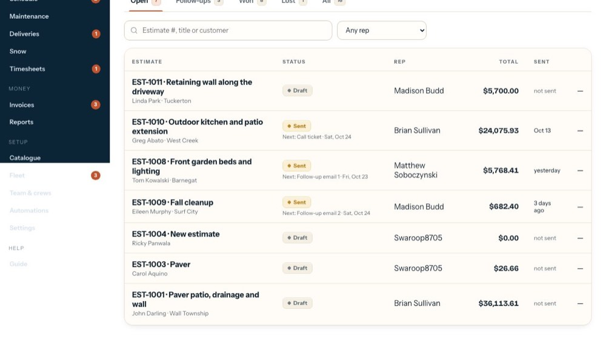
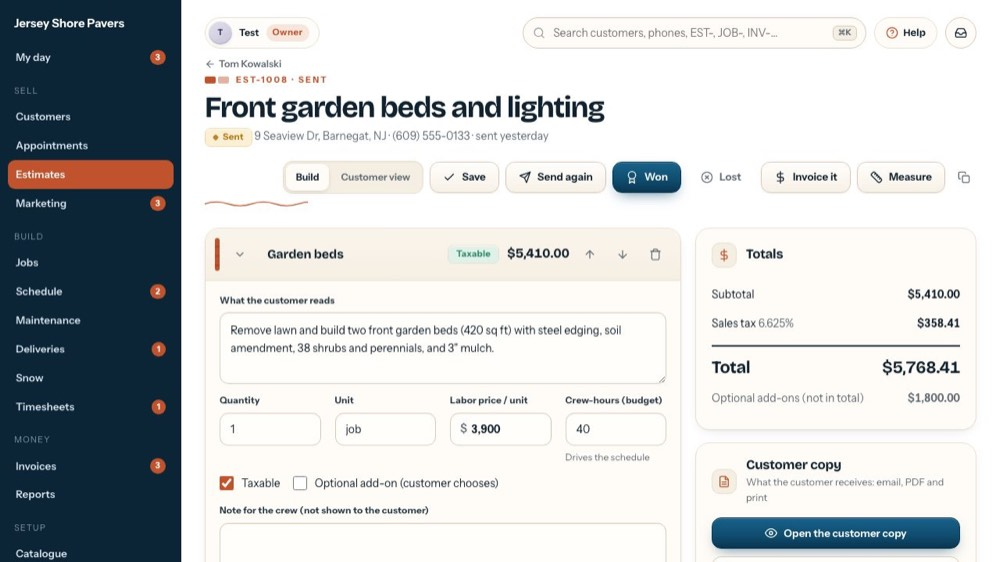
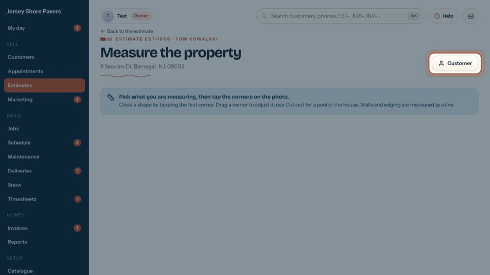
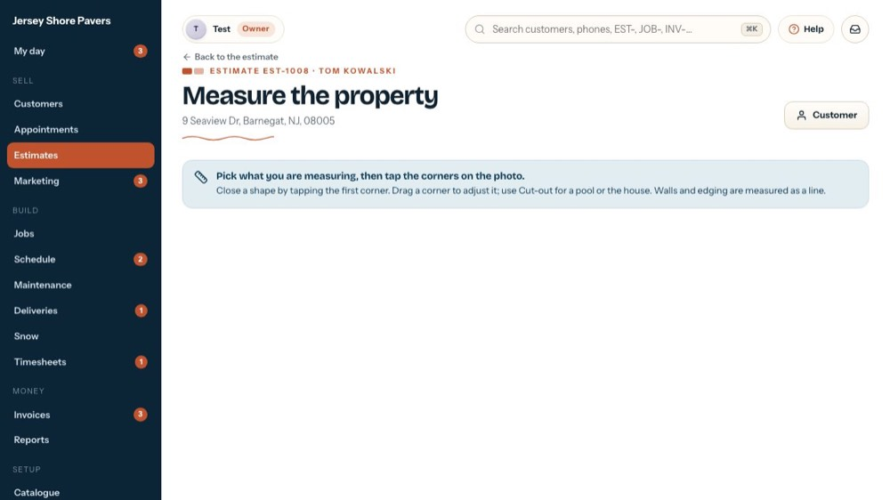
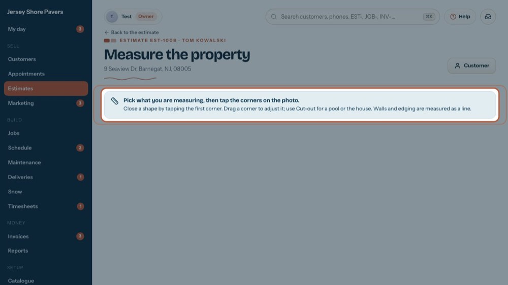

Everything on Measure
In the office app, press Help and type everything on measure
: the tour plays on your own screen, with your own data.
-

1Open the estimate
Measuring starts from an estimate. The tour opens this one.
-

2Measure
Opens the Measure screen for this estimate (it saves your changes first). The tour opens it.
-
 3
3Which estimate
The estimate number and the customer you are measuring for.
-
 4
4The property address
The satellite photo opens on this address. With no address on the customer, search for the house on the map instead.
-
 5
5Back to the estimate
Goes back to the estimate. What you drew is kept only if you save it first with Save and go to the estimate, under the map.
-

6Customer
Opens the customer: phones, notes, gate codes.
-
 7
7How to draw
Under this note is the satellite photo. Pick what you are measuring, then tap the corners. Tap the first corner again to close the shape.
-

8What you can measure
Patio / pavers, Driveway, Walkway, Lawn and Beds / mulch as areas in square feet; Wall / edging as a line in feet. Search moves the map.
-

9Fix and cut out
Drag a corner to adjust a shape. Use Cut-out to take a pool, the house or a bed out of an area.
-
10
Save it onto the estimate
Under the map, What you measured adds it up by kind as you draw. Save and go to the estimate keeps it and takes you back.
-
 11
11Then, on the estimate
A Measured card lists each area: Add makes it a section, or "Use a measurement" in a section fills its quantity. Open comes back here.